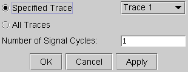

Coherent Reconstruction...
Coherent Reconstruction allows you to reconstruct uploaded data as coherent data. That is, the data will be compressed into one signal cycle.
This requires:
- You upload only data of one UTP (unit test period). One UTP is the default capture memory contents if the test was performed under coherent conditions. If not, you need to calculate the length of one UTP and set the number of points to be uploaded accordingly.
- The total number of UTPs in the capture memory can be determined by calculating the largest common factor of the number of captured cycles (M) and the number of captured points (N).
- In order to support coherent testing, M and N must be mutually primed (they may not have a common factor other than one), and they must have the same ratio as Fin/Fs (input frequency divided by sampling frequency).
- You enter the number of signal cycles that have been captured into the corresponding box.
Coherent reconstruction is supported in the time domain (pts, Time/s) as well as in the frequency domain (Freq/Hz).
